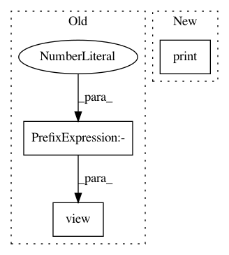

5c227f24c46d916abf9bef2a7910710222ea47b3,test/transforms/test_polar.py,,test_polar,#,7
Before Change
assert approx(out) == [0.5, 0, 0.5, 0.5, 1, 0.25, 1, 0.75]
data.edge_attr = torch.tensor([1, 1, 1, 1], dtype=torch.float)
out = Polar()(data).edge_attr.view(-1).tolist()
assert approx(out) == [1, 0.5, 0, 1, 0.5, 0.5, 1, 1, 0.25, 1, 1, 0.75]
After Change
pos = torch.tensor([[-1, 0], [0, 0], [0, 2]], dtype=torch.float)
edge_index = torch.tensor([[0, 1, 1, 2], [1, 0, 2, 1]])
data = Data(edge_index=edge_index, pos=pos)
print(data)
// out = Polar()(data).edge_attr.view(-1).tolist()
// assert approx(out) == [0.5, 0, 0.5, 0.5, 1, 0.25, 1, 0.75]
In pattern: SUPERPATTERN
Frequency: 3
Non-data size: 3
Instances
Project Name: rusty1s/pytorch_geometric
Commit Name: 5c227f24c46d916abf9bef2a7910710222ea47b3
Time: 2018-12-15
Author: matthias.fey@tu-dortmund.de
File Name: test/transforms/test_polar.py
Class Name:
Method Name: test_polar
Project Name: rusty1s/pytorch_geometric
Commit Name: 5c227f24c46d916abf9bef2a7910710222ea47b3
Time: 2018-12-15
Author: matthias.fey@tu-dortmund.de
File Name: test/transforms/test_spherical.py
Class Name:
Method Name: test_spherical
Project Name: nerox8664/pytorch2keras
Commit Name: ad2100bf40e81c9964b9f4c8a3e5a9dbf5f4efd9
Time: 2018-11-24
Author: nerox8664@gmail.com
File Name: tests/layers/view.py
Class Name: TestView
Method Name: forward